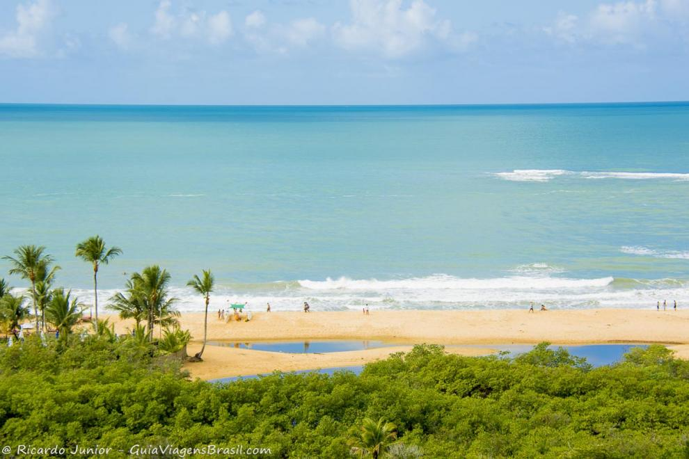

Listas para aprender
Top 10 melhores cidades para se viver no Brasil.
- Maringá
- Jundiaí
- São José do Rio Preto
- Piracicaba
- São José dos Campos
- Franca
- Curitiba
- Taubaté
- Campinas
- Vitória
- Melhor cidade para conhecer: São Vicente.
Melhores cidades com Praias do Brasil
- Trancoso
- Barra Grande
- Barra da Lagoa
- Ubatuba
- Paraty
- Búzios
- Jericoacoara
- Ilhabela
- Bombas e Bombinhas

Curiosidades:
- São Vicente
- É primeira cidade do Brasil.
- Tem vlt.
- Tem a ETEC Rutinha.
- Santos
- Tem o maior jardim de praia.
Clique a seguir para voltar para o meu Portifolio: